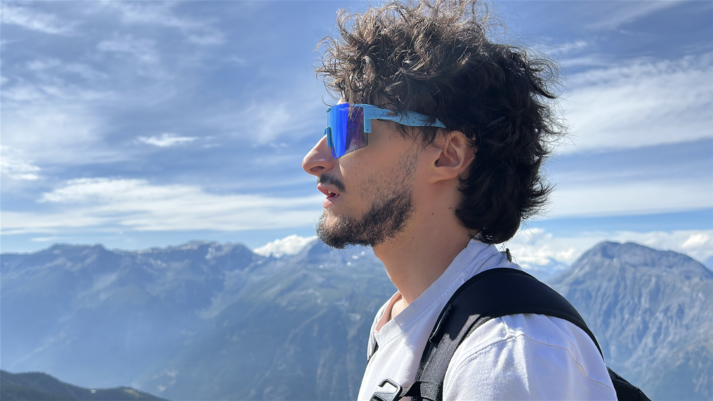

Torino, Italia
Videomaker, autore
e social media manager.
Trasformo idee pazzerelle in video chiari, coinvolgenti e pensati per funzionare sui social.
Concept
Scrittura
Riprese
Montaggio
Strategia
Guarda i lavori
↗

Progetto in evidenza
BRAINFRAME
Un progetto editoriale che trasforma argomenti scientifici complessi in contenuti chiari, visivi e coinvolgenti.
Il mio ruolo
Autore e creative producer
Il processo
Ricerca, scrittura, riprese, montaggio e pubblicazione
Progetto indipendente · Social media
PAGNOTTAPAZZA
Un progetto familiare dedicato alla pasticceria casalinga. Ho sviluppato un format strutturato per i Reel, occupandomi di ideazione, produzione video e gestione editoriale del profilo.
82K+
Visualizzazioni su un singolo Reel
+316
Follower netti in 90 giorni
47K
Account raggiunti in 90 giorni
Ideazione format
Produzione video
Montaggio
Strategia editoriale
Gestione social
Visita il profilo Instagram
↗
Format · Reel · Crescita organica